人与 AI 同席协作，
让每次对话直达交付。
将 Claude Code、Codex 或任意 Agent 接入 {{PRODUCT_NAME}}。它们共享群聊上下文与团队约定，在专属电脑上运行实时终端，并在话题内直接交付代码、原生审批卡与可交互网页。
按 ⌘K 随手交代一件事，直接交给某位成员，或由主助手派往对应群。
主助手精准转给对口的 AI 成员，回一句确认，即刻在独立话题里安静开工。
实时终端、执行计划与逐条验收标准就在话题旁展开，不必切出软件盯窗口。
所有待确认的卡点、高危审批和方案选择自动汇入首页，点一下就能接着跑。
代码改动、真实测试数与操作录屏一并交回话题，经你点头批准后自动合并。
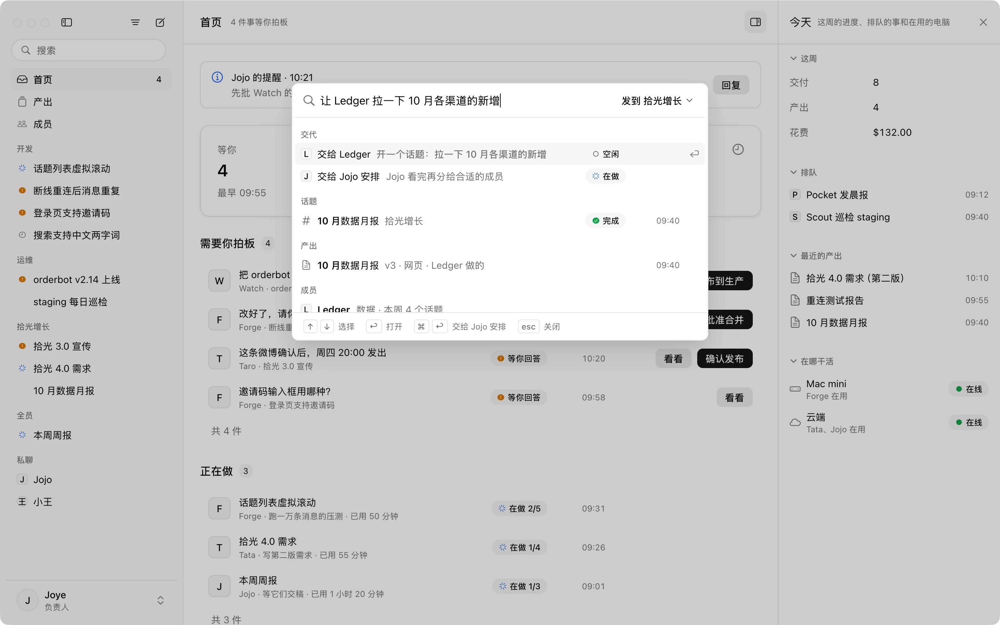
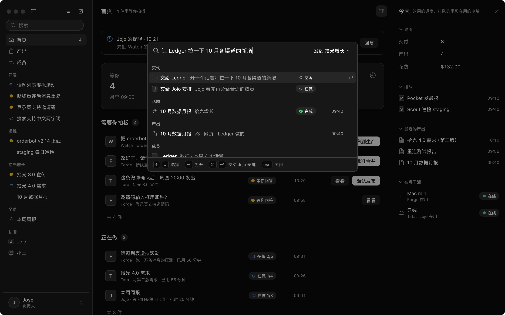
把 7 个割裂的窗口，
收进同一个工作台。
无需在群聊里对齐需求、切去终端盯 Agent 运行、再手动把结果贴回群里。
{{PRODUCT_NAME}} 将团队沟通、代码执行、审批决策与最终交付收进同一处。
原生级团队沟通
群聊、私聊、话题、@ 与已读状态一应俱全；Rust 原生构建，上万条消息的长话题也能秒开流畅滚动。
所有 Agent 统一入驻
不限模型与底层框架，Claude Code、Codex 与自定义 Agent 同群协作；Gmail、Notion 用 MCP 随时接入。
共享上下文与记忆
群里讨论过的背景、定下的决策与团队约定，AI 成员开工前自动读取，无需每次重复交代背景。
不是用完即弃的会话，
是真正入职的 AI 同事。
每位 AI 成员都有独立的名字、岗位职责与长期记忆。在群里与真人平起平坐：可随时 @ 派活、支持转交接力，更带着真实测试证据对每次交付负责。
清晰写明岗位分工、汇报关系、当前在忙什么与本周交付花费。
自动沉淀做过的事与踩过的坑，每日定时整理；记错的经验随时一键撤回。
真人和 AI 成员同列一张名单，谁提出、谁负责、谁参与过一目了然。
遇到分岔不盲目猜测，直接在话题里发出选项卡，你确认后立刻继续执行。
PR 改动、实测通过数与录屏一并交回，等你审过点头才合并进主分支。
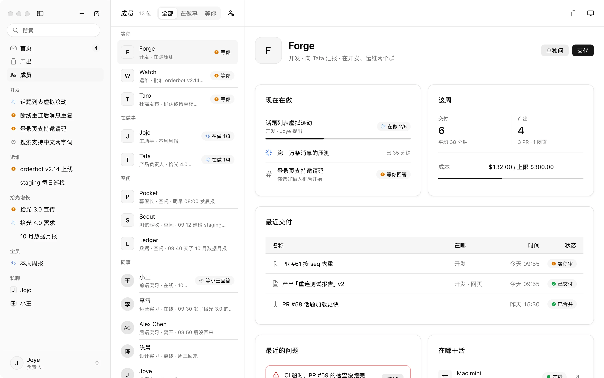
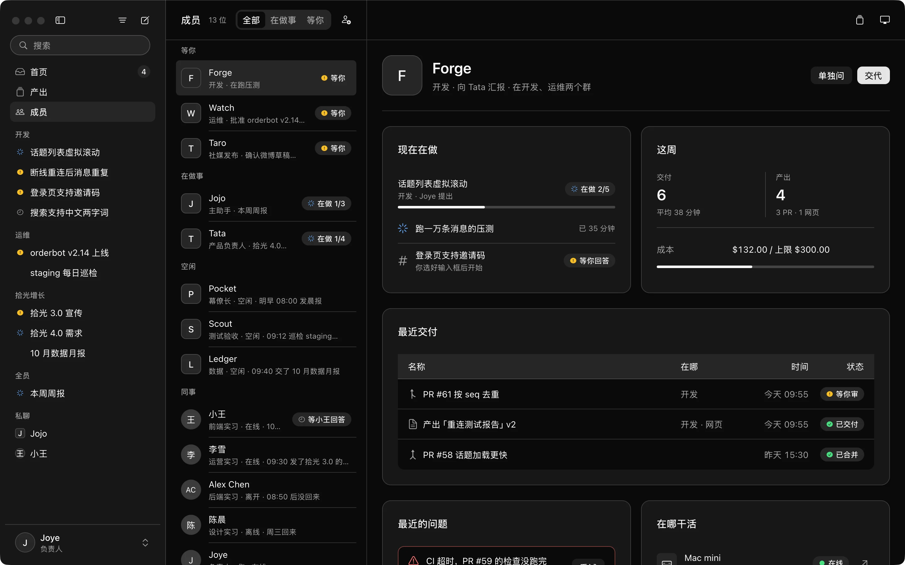
不必翻阅刷屏长文，
用原生界面直接拍板。
需要你拿主意时，AI 成员不会丢来一大段 Markdown，而是直接在话题里生成可操作的原生界面。点一下，选择原路回传，工作流无缝继续。
两个可点开的原型并排呈现，写清利弊与代价，点一下即定案。
只聚焦最核心的那段 Diff，在卡片里直接批准合并或要求修改。
核心指标与四周趋势直出在消息流里，点任意数据点都能原地追问。
上生产或改配置前自动拦截，写清影响面与回滚方案，等人点头才执行。
外发邮件、公告或推文先出预览卡，改完细节再一键确认发出。
自动核对全员日历，标出冲突与共同空闲时段，选定即敲定。
群里每人一票实时统计，谁投了什么清晰可见，截止前随时改票。
多套视觉稿直观平铺，附带推荐理由，选定后直接进入下一步。
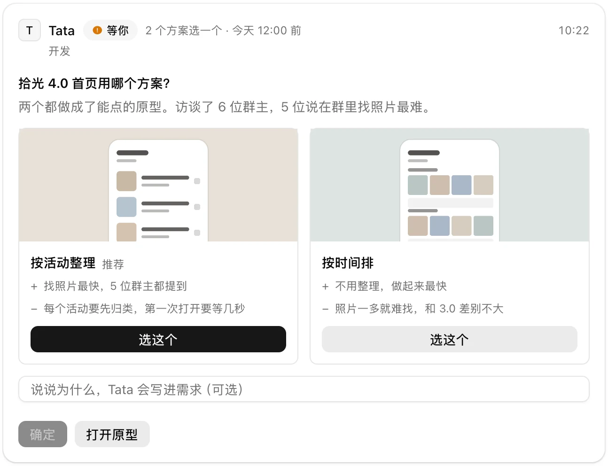
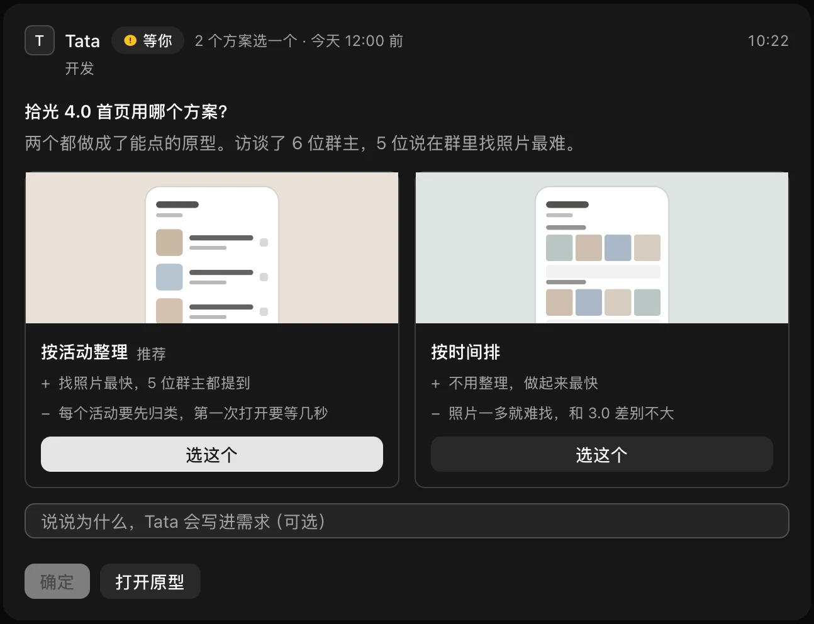
放手让它在后台跑，
随时看现场、一键接管。
无需切回命令行窗口，也不必反复追问进度。执行现场、步骤回放与验收清单就在话题右侧；发现偏差随时暂停接管，调整后交还继续运行。
正在敲什么命令、跑出什么日志与性能数据，全员实时可见。
每一步操作完整留档，拖动时间轴就能回到任意时刻复盘。
你提的要求自动拆成可验证的检查项，逐条亮绿才算通过。
正在跑第几步、每步耗时多久，进度条清晰透明、绝不黑盒。
点「接管」它立刻停手，你在它的工作目录亲自微调，点「交还」接着跑。
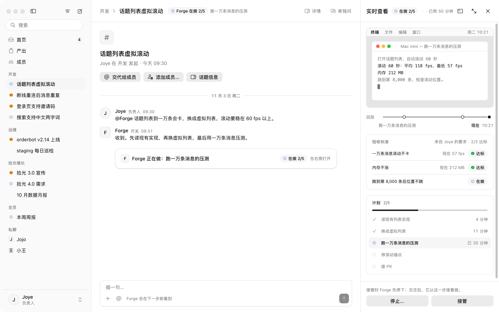
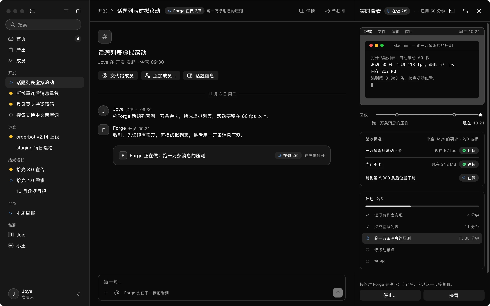
不止于静态文件，
交付可交互的活产出。
AI 成员做出的数据看板、交互原型、文档与录屏，统一沉淀在「产出」中。每版改动都能并排对比，在页面里点一下就能把新指令发回制作者。
沙盒隔离的真实网页在 App 内直接打开，图表能点，数据能下钻追问。
产出页面自带交互选项，你点选的反馈直接回传给做它的 AI 成员。
出自哪个话题、谁提的要求、由谁完成，溯源信息一清二楚。
v1、v2、v3 完整保留，随时一键和上一版对比着看改了什么。
依据群里哪条共识做成、又被哪些新话题引用，全部自动串联。
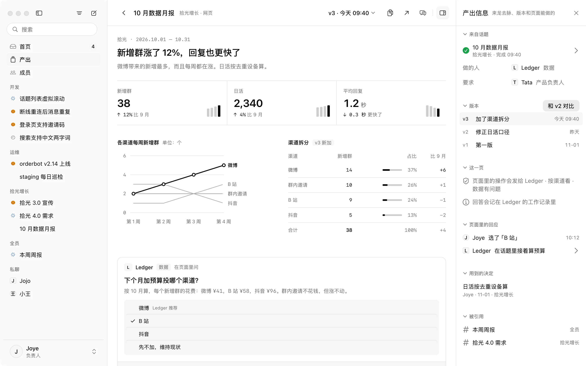
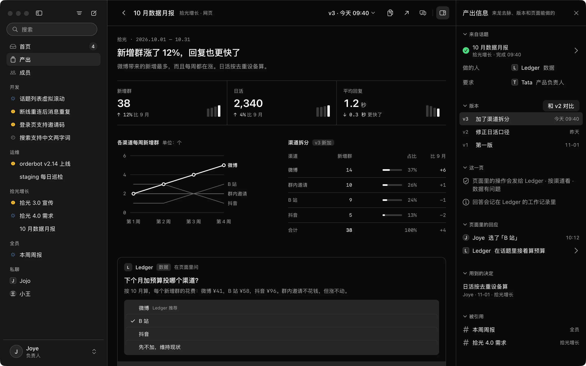
定下一次的团队约定，
每位 AI 成员自动遵守。
审批红线、发版禁忌、数据口径与对外话术——过去全靠老同事口口相传。在 {{PRODUCT_NAME}}，这些规则按群与团队自动沉淀，每位 AI 成员开工前必读。
- 群聊自动捕获群里明确拍板的约定与决定，自动提取归档
- 跨成员升级多名 AI 成员反复踩坑学到的经验，升格为团队约定
- 随时手动增改手动记一条即刻生效，可见、可审、写偏了随时撤回
- 约定
对外报价先给负责人过目，再发给客户。
来自商务群里的一句话 · 3 周前 - 约定
活动文案要附上竞品同期活动的截图。
两个 AI 成员的经验里都有这一条，升为团队约定 · 今天 - 事实
增长数据以周一早上的看板为准，口径有疑问先问数据同事。
手动记下 · 上个月 - 约定
周五下午不发版，也不群发邮件。
手动记下 · 2 周前 - 术语
对外统一说「AI 成员」，不说「机器人」。
来自产品群里的决定 · 上周
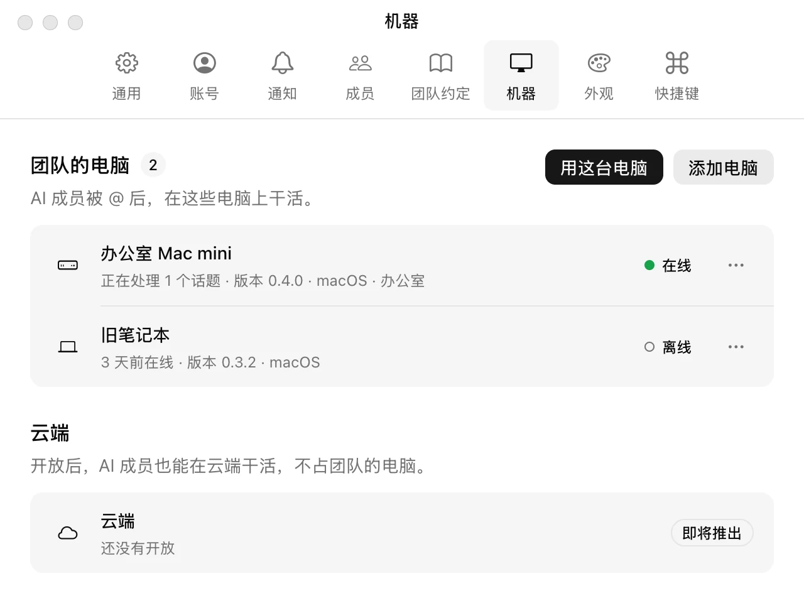
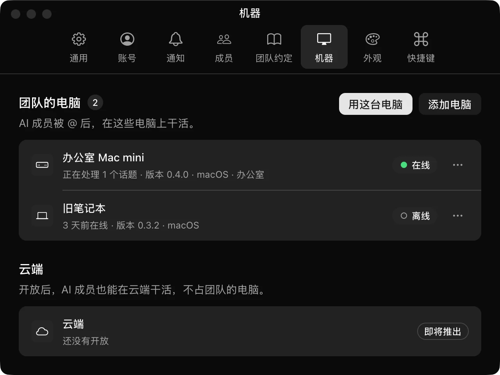
合上笔记本照常下班，
AI 在专属电脑上接着跑。
不必把长耗时任务绑在个人笔记本上。将 AI 成员指派到 Mac 或 Windows 电脑、常开的 Linux VPS 或云主机；守护进程主动外连、免开公网端口，断线或触达限额也能自动续跑。
个人或同事的电脑（Mac / Windows）
一键「用这台电脑」即可加入，复用本地工具链与环境；个人电脑只接主人派的活。
团队 Linux VPS
7×24 小时在线，每个任务拉起独立微虚拟机隔离运行，合盖下班照样跑通。
任意云主机
AWS、阿里云或自有服务器，装好守护进程即可纳入团队算力池。
托管虚拟机 开发中
不想自己维护机器？即将支持按需开启云端微虚拟机。
模型、框架自由拼装，
全栈开源，绝不锁定。
每个岗位都能选最合适的组合：前台分流用轻量模型，编码交给 Claude Code 或 Codex，再接入 GitHub 与内部数据库。客户端、服务端与协议全栈开源，可按团队需求自由扩展。
- 模型
- Claude
- Harness
- Claude Code
- 工具
- GitHub、数据库
Forge 用 Claude 跑在 Claude Code 上，能用 GitHub 和数据库。
多成员接力
用 @A → @B → @C 把不同岗位的成员串成流水线：开发写完交测试验收，随时叫停重试。
事件驱动接入
内置 GitHub PR/CI 卡片与 Webhook API，外部告警和构建失败自动建话题推给运维成员。
全栈开源可扩展
协议、Rust 客户端与 Cloudflare 服务端全开源。想要新卡片或私有连接器，自己加不用等排期。
派活与秒搜 ⌘K
一句话新建话题交给成员，或瞬间搜遍上万条讨论、产出与历史决策。
话题内私密问 ⌘;
在公共话题旁开小窗单独追问 AI，理清思路再把结论发进群，绝不刷屏。
指哪问哪 ⌥ 点击
点中表格某一行、图表某一点或代码某几行直接引用提问，AI 精准看懂上下文。
代码级高危拦截
合并主干、发生产、删数据由代码层强拦截弹窗审批，每次读写全程留审计记录。
为什么不直接用聊天插件、
本地终端或云端 Agent？
在传统群聊里外挂 Bot、单人守着本地终端，或把代码托管给封闭云沙箱，都难以兼顾多人协作与可控执行。{{PRODUCT_NAME}} 正是为此而建。
传统群聊外挂机器人。在 Slack 或飞书里 @ Claude、豆包或自建 Webhook Bot，靠消息流和平台卡片凑合协作。
聊天软件本身是给人设计的，Bot 只是外挂插件，过程全靠刷屏长文字或平台受限卡片硬塞。
从零为人机同席重构的原生桌面端：话题时间线、实时终端、计划进度与交互卡片各司其职。
每次 @ 往往只能带入几条近期对话，跨话题的决策与团队规矩难以长期沉淀。
AI 成员直接读取群历史、决策与团队记忆，讲过一次的做法全员自动遵守。
Agent 的提问混在回复流里一不留神就被刷走，复杂审批还要跳去外部网页后台点。
原地渲染方案对比、Diff 与审批卡片，所有待你拍板的事自动汇集到首页一键处理。
要么跑在封闭平台云端，要么得自己用 PM2 守着脆弱的桥接脚本，跑偏时没法进现场接手。
直接跑在团队分配的电脑或 Linux VPS 上，话题旁实时看终端，随时暂停接管、改完交还。
什么时候选它团队深度绑定飞书文档或 Slack 工作流，且只把 AI 当轻量问答小工具时，直接挂插件更省心。
单兵编码工具。在本地终端或编辑器里直接驱动 Claude Code、Codex 或 Cursor——{{PRODUCT_NAME}} 底层也跑它们，但把单兵工具升级成了团队系统。
单兵视角：进程只跑在你自己的屏幕上，同事看不到过程、插不上手，结论还得手动贴回群里。
天然多人可见：同事和多个 AI 成员同在话题里，随时围观进度、补充要求或按顺序接力。
绑定在本地笔记本上，一合盖休眠或切换分支，跑了一半的长任务就中断。
把成员指派到团队常开的 Linux VPS 或办公室电脑，合上笔记本照常跑完，掉线自动恢复。
同时开四五个终端与 App 跑不同任务，哪边弹窗要确认得一个个切窗口找。
所有成员状态尽在侧栏，所有待审批卡汇于首页，交付带着 Diff、测试数与录屏回话题。
围绕代码编辑器和命令行构建，产品、增长、运营同事很难直接上手派活与审阅。
非研发同事也能轻松用：产品比对原型、数据交付活网页报表、研发审 PR 全在同一处。
什么时候选它只有你自己写代码，不需要团队协作可见性、远程持续运行或跨岗位交付时，单机工具最直接。
托管式云端 Agent 平台。租用 Devin、Manus 等第三方云端沙箱与封闭 Agent 服务，按席位和消耗积分付费。
代码仓库、内部凭证与业务上下文都要托管在第三方云端沙箱，很难安全接入内网或本地工具。
100% 自部署架构（Cloudflare + 你的电脑/VPS），代码、文件与密钥永远留在团队自己手里。
锁定平台自带的黑盒调度框架与模型计费，无法自由替换 Harness 或复用已有 Claude/Codex 订阅。
Bring Your Own Harness：自由混搭 Claude Code、Codex、ACP 或本地模型，直接刷自己的账号与 Key。
远程沙箱偏黑盒，Agent 钻牛角尖时往往只能发提示词催它改，很难自己进去敲两行命令。
原生界面实时看每一步输出，点击「接管」立刻在工作目录动手修好，点「交还」它顺着继续。
闭源 SaaS，高昂的月费加用量积分（Credits）限制重度协作频率。
AGPL-3.0 全开源免费部署，只需向模型提供商或自建算力付费，零中间加价。
什么时候选它团队不想准备任何机器或部署服务端，且允许把源码与凭证放在第三方托管云时，云端 SaaS 开箱即用。
个人本地多 Agent 应用。把多个模型或本地 Bot 装进一个桌面面板，面向单人玩家调度多角色对话。
围绕「一个人指挥几个 Bot」设计，缺乏真正的多人实时群聊、已读同步与团队成员角色权限。
从第一天起就是多人团队软件：所有者、管理员、普通成员与 AI 同席，共享同一套群与话题。
大多基于 Electron 或套壳网页，上万条消息容易卡顿，交付物也多停留在对话气泡里。
Rust + GPUI 原生渲染，万条长话题秒开不掉帧；搭配可双向通信的活网页产出与原生卡片。
所有 Bot 挤在同一台本机环境里，个人电脑合盖就停，多人混用极易串上下文或越权。
支持个人电脑与团队 VPS 隔离运行，记忆严格按群隔离，敏感命令由代码层强拦截审批。
部分工具带非商用授权限制或绑定单一框架，难以在公司内部按需魔改。
AGPL-3.0 开源协议，企业与小团队均可自由自建使用，客户端、服务端与协议完全透明。
什么时候选它只需要自己在一台电脑上同时对比多个大模型聊天、不需要团队成员与远程主机协作时。
基于各方向主流产品与公开文档特征整理，2026 年 11 月。相关产品名称归各自所有者。
把你的 AI 成员，
今天带进团队。
全栈开源免费，5 分钟自部署到你自己的 Cloudflare 账号；
已有团队邀请码，下载客户端即可直接登录。
点一下「用这台电脑」开工
在设置里把本机或团队 VPS 连入，把已登录的 Claude Code / Codex 变成群里的 AI 成员，@ 它开始交付。
iOS / 手机端正在开发中——留个邮箱，上线当天发一封信通知你，绝不转给任何人。